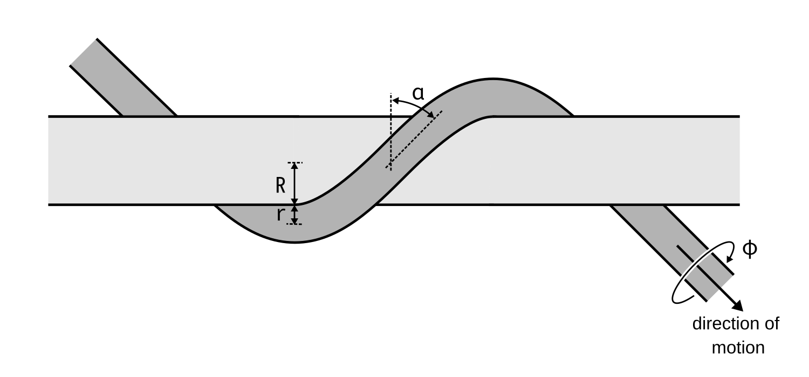

Why Ropes Twist
Climbing ropes sometimes twist and tangle, but the precise mechanism of how and when is not well understood in the climbing community. Which belay devices, anchor configurations, or coiling methods cause the twist? Does it depend on friction, climber weight or lowering speed? What even is rope twist? This article explores the physics of rope twisting to answer these questions.

Twisting physics
Rope twist is not an invisible or mysterious property, nor is it caused by the rope sheath moving relative to the rope core (at least not in most cases).
Rope twist is simply the rotation of a rope around its own axis. When the rate of rotation is high enough, the rope starts buckling, and eventually starts to form loops and generally becomes tangled.

In virtually all scenarios, rope twist is induced by holding one end of the rope stationary, while the other end is forced to spin around its axis. One end is commonly held stationary because it is fixed to an anchor, tied in to a climber, or just lying on the ground. The other end of the rope is forced to spin around its axis by running through a fixed point, or by running through a belay or rappel device. Depending on the exact geometry of the setup, rope twist may be induced.
Theory
Because climbing rope sheath is diagonally braided, ropes can be bent easily, but are very resistant to twisting. Rope will remain untwisted, unless considerable force is applied. But the definition of "untwisted" is not trivial — what does it mean for a rope running around obstacles along complicated curves not to be twisted?
The answer comes from Kirchhoff's rod theory. Following this article, we can model rope as a material curve running through space. Whenever the curve is planar, its geometric torsion is zero, and no twist is induced. This is the case for a straight rope, but also rope running over a pulley, through a tube-style device, or through some anchor configurations.
The simplest case which does induce twist is a rope wrapped around a bar in a helix. In the article, by substituting τ from equation (31) into equation (54.1), and setting zero strain v3 = v03 = 0, we get the following intrinsic twist rate:
where
- φ is the rotation of the rope about its own axis (in radians),
- l is the length of rope that has run around the bar,
- R is the radius of the bar,
- r is the radius of the rope,
- α is the wrap angle (Figure 3).

When the rope slides around the bar, this intrinsic rotation is transferred from the helical section of the rope to the straight sections leading to and from the bar, which causes the rope to twist, as can be seen in Figure 4 below.
Some notes on the twist rate result:
- Twisting is not caused by friction, but by rope geometry. Even with zero friction, the rope would still twist.
- Twist rate is highest for a rope running at 45° to the bar. The twist rate is zero when the rope is wrapped around the bar at a right angle.
- Twist rate is higher for smaller bend radii, and smaller rope diameters.
- Twist rate is independent of the number of turns, rope velocity and rope tension. A quarter turn should induce the same twist rate as a full turn - more on that later.
Complex configurations
The simple helical model above is sufficient to approximate some simple real-world examples, like a rope running through a tube-style device, or over a single carabiner. More complex systems, like the Munter hitch or a two-point anchor, can be described by decomposing them into multiple helical sections. To find how such a system behaves as a whole, we need to understand how helical sections placed one after another along the rope interact.
As we saw, a helix imparts a rotation rate to the rope. When multiple helical sections are placed along the rope's path and their rotation rates are the same, then the whole system's twist rate is equal to the sections' twist rates.
At first glance, each helical section seems to force its own twist rate on the rope - but that is clearly impossible. Rope running through a system of obstacles can only twist at one rate, because otherwise, over time, rope twist between two obstacles would accumulate without limit. The following sections analyze how the elementary helical sections interact with each other to produce the final twist rate.
The same reasoning applies to any number of sections in a row, and gives a simple rule:
The first helical section the rope runs through sets how fast the rope spins. Every section after it only stores torsion in the rope leading into it.
For each section after the first, the rope leading into it settles at a torsion equal to the difference between that section's spin rate and the first section's. The rope leaving the last section is free, so it spins at the first section's rate.
Limitations
As shown above, the model predicts rope to twist quite severly, regardless of how many turns the rope has run around the bar. Even a slight 30-degree bend over an edge should induce significant twist - but that is not what we observe. I found two explanations which limit how much rope twist is induced in practice:
Rope buckling
When rope tension is low, rope twist is limited, because the rope is not forced to follow the straightest path around the obstacle. Instead, it will change its shape in ways which limit the intrinsic rotation, and thus limit the induced twist.Rope slipping
Normally, the rope follows the zero-strain path around the obstacle. But when the number of turns is low, or when the turn radius is large, the rope may deviate from the zero-strain path, and rotate relative to the bar to relieve some of the accumulated torsion. This, again, limits the induced twist.Applications
Rope can become twisted in several ways:
- Improper coiling and un-coiling,
- Running the rope through some configurations of fixed points,
- Belaying or rappelling with a device that causes the rope to twist.
Anchor configuration
TODO: Describe how anchor configuration induce rope twist.
Belaying and rappelling
TODO: Describe how belay devices induce rope twist.
Figure-8 belay device
TODO: Describe how the Figure-8 belay device induce rope twist.
Munter hitch
TODO: Describe how the Munter hitch induce rope twist.
Gri-Gri
TODO: Describe how the Gri-Gri induce rope twist.
Rope coiling
All these causes are analyzed in detail in the following sections.